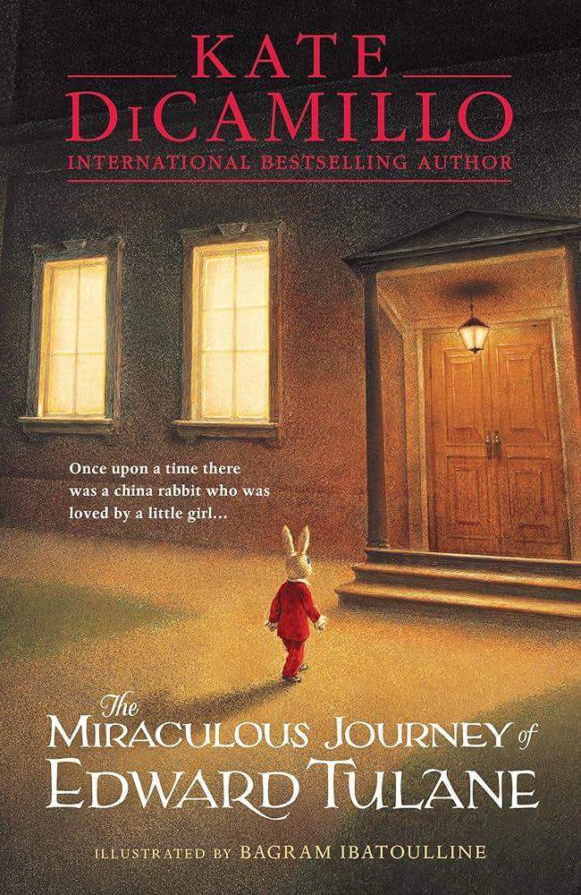

My Favorite Book:

- "The Miraculous Journey of Edward Tulane" by Kate DiCamillo is a beautiful book about love. Edward, the main character - a stuffed bunny, goes on an incredible world-crossing journey when he is separated from his owner. Throughout his many struggles, he finds out what it means to truly love somebody.
read full review!
Art I've Done:
 Go To Homescreen!
Go to my third page!
Go To Homescreen!
Go to my third page!